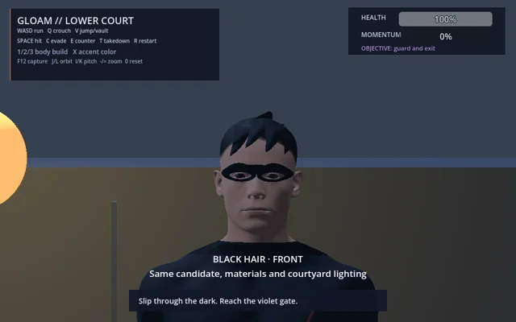
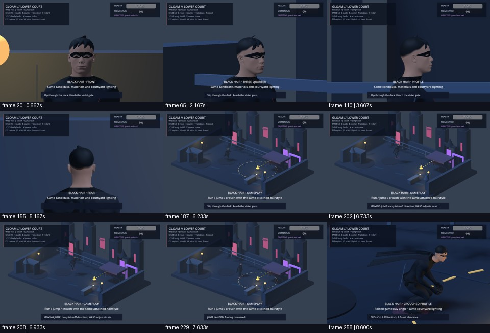
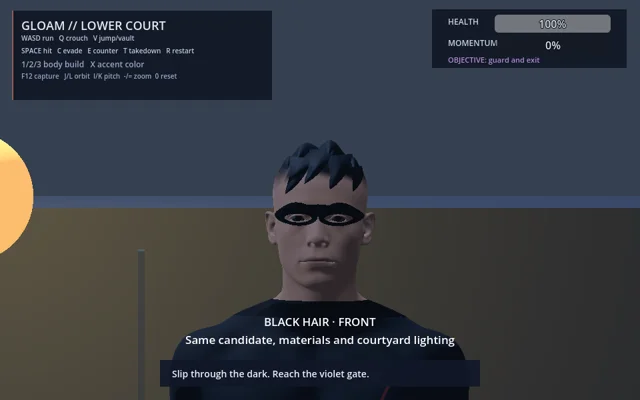
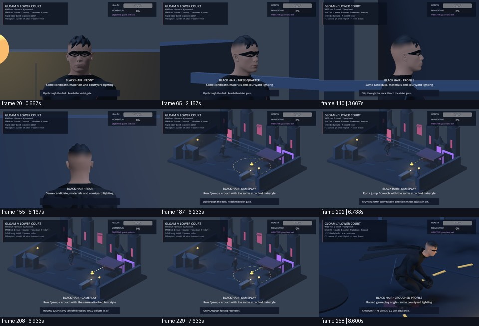
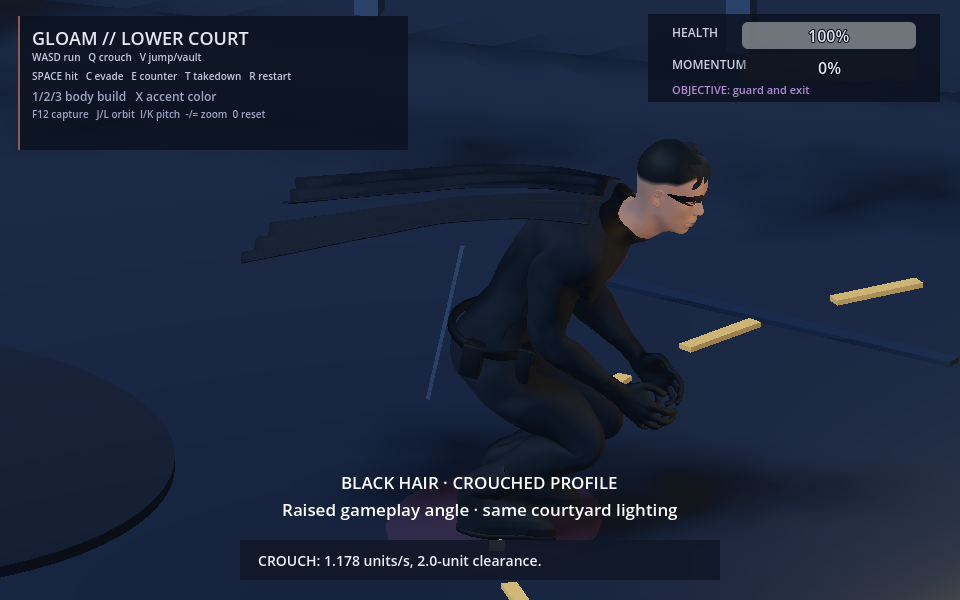
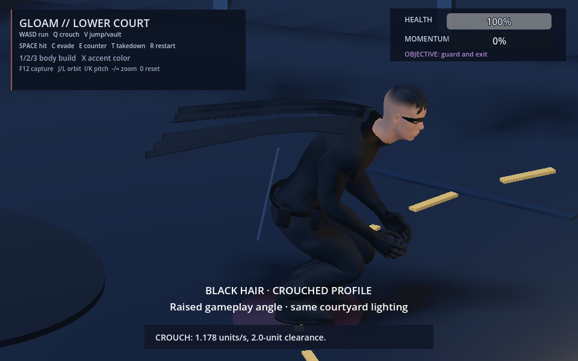

Before
c0c95a9a40aa


After
6b51a2c0db0c


Does short black tousled hair read clearly from every angle and during gameplay?
Fixed 30 Hz helper-driven evidence. User visual judgement is pending.
c0c95a9a40aa


6b51a2c0db0c



